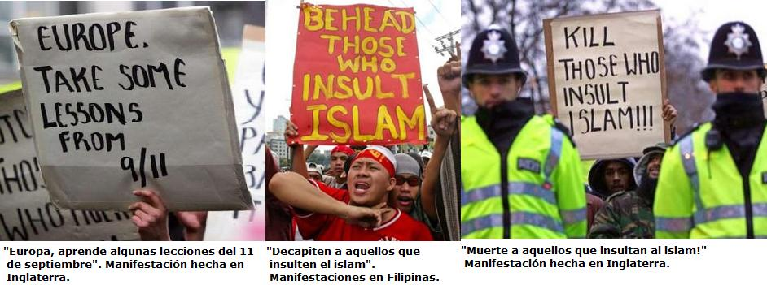
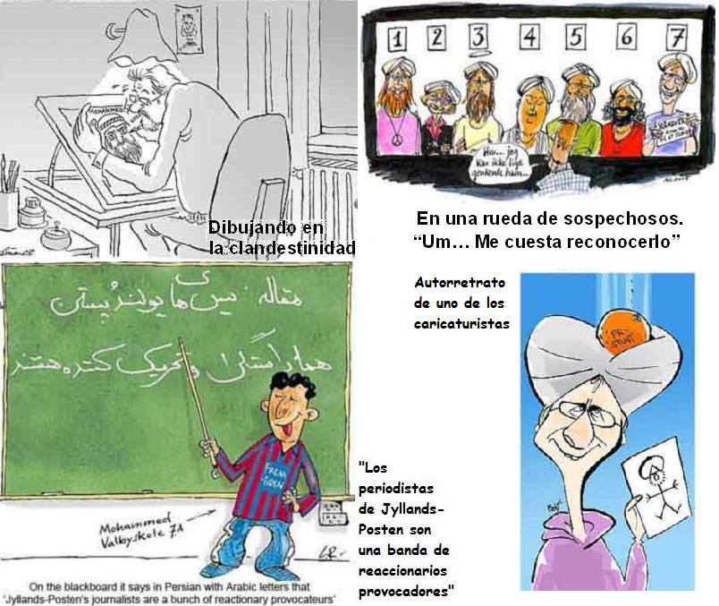
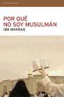

A finales del 2005 e inicios del 2006 el mundo fue testigo de una ola de disturbios a raíz de la publicación de doce caricaturas sobre el profeta Mahoma publicadas por el diario danés Jyllands-Posten. Según el Islam la figura de Mahoma, Alá y otros personajes religiosos no puede dibujarse, ni siquiera de forma positiva, por temor que esto conlleve a la idolatría.
Las reacciones de los fundamentalistas musulmanes incluyeron la quema de las embajadas de Dinamarca, Noruega y Francia en varios países árabes, el boicot de sus productos y amenazas de muerte.
En el mundo con libertad de prensa es común caricaturizar a los líderes políticos, incluso a dirigentes de la Iglesia Católica como al Papa o algún obispo local, sin que esto genere la ira y la devastación mostrada por el mundo musulmán en esa ocasión.
Por otra parte, muchos occidentales vieron en el intento de prohibir la publicación de las viñetas como una coacción de la libertad de prensa y expresión, razón por la que estas caricaturas fueron reproducidas por varios medios europeos. Sin embargo, otros occidentales calificaron las caricaturas como “una provocación.” Tal fue el caso del entonces presidente francés Jacques Chirac quien afirmó con motivo a la reproducción de las caricaturas en la revista Charlie Hebdo: “Herir las convicciones de otros, en particular las convicciones religiosas, debe evitarse”. ¿Pero, por qué deben evitarse? ¿No coarta esto la libertad de expresión? ¿Debemos evitar toda crítica al islam por temor a las amenazas de muerte? ¿Qué tiene acaso de especial la religión? Sobre esta última pregunta el famoso escritor de ciencia ficción Douglas Adams expresó:
La religión… contiene ciertas ideas es su interior que podemos llamar sagradas o santas o lo que se quiera. Lo que esto significa es: «Aquí hay una idea o una noción de la que no se te esta permitido decir nada malo. Nada en absoluto. ¿Y por qué no? Porque no. » Si alguien vota a un partido con el que no se está de acuerdo, uno es libre de discutir sobre él lo que quiera; todo mundo tendrá un argumento en contra, pero nadie se sentirá agredido por ello. Si alguien piensa que los impuestos deben subir o bajar, eres libre de tener un argumento en contra. Pero por otro lado, si alguien dice: «Mi religión me dice que no puedo mover ni un interruptor en sábado», tú dices: «Yo lo respeto» ¿Por qué se supone que es legítimo apoyar al Partido Conservador o al Partido Laborista, a los republicanos o a los demócratas, a este modelo económico en vez de a aquel, a Macintosh en vez de a Windows, pero no lo es tener una opinión acerca de cómo comenzó el Universo, acerca de quien creó el Universo…, porque es sagrado?… Todo el mundo se pone absolutamente frenético con esto porque no se nos permite decir esas cosas. Pero si se piensa racionalmente no hay razón para que esas cosas no puedan estar tan abiertas al debate como cualquier otra…
El islam exige mucho respeto por parte de la sociedad occidental sin importarle que no lo da a sus contradictores.
Veamos las viñetas que despertaron la ira de los seguidores de esta religión de amor y tolerancia llamada islam.

Las caricaturas de Mahoma en el diario Jyllands Posten aparecieron tras un artículo hecho por el diario danés Politiken en el que expresaban las dificultades que tenía el escritor infantil Kare Bluitgen en encontrar ilustradores para su libro sobre la vida de Mahoma. Es entonces cuando Jyllands Posten decidé reomper el tabú y convoca a los artistas a enviar sus dibujos. Doce de ellos salieron a la luz el 30 de septiembre de 2005 con las consecuencias ya mencionadas.
Dos de las doce caricaturas ponen sobre la mesa el tema del lugar de la mujer en las sociedades musulmanas.

El píe de imagen de una de ellas dice “Mahoma protege a las mujeres con velo” mientras muestra a un profeta ciego con una espada en la mano. La otra dice: Profeta: Hay que estar loco o mudo para mantener a su mujer bajo su dominación. ¿Por qué esta crítica? Hay por lo menos 10 razones que nos llevan a ver que la “protección” de la mujer en el islam es solo un eufemismo para indicar subordinación:
Según la ley islámica las mujeres son inferiores a los hombres
En un tribunal de justicia su testimonio equivale al de la mitad al de un hombre.
Sus movimientos están restringidos. Se les obliga estar acompañadas de un pariente cercano para salir de casa.
No pueden casarse con no musulmanes.
Con respecto a la herencia el Corán afirma que los hijos varones recibirán el doble que las hijas mujeres.
Los ortodoxos musulmanes no consideran que las mujeres deban recibir educación, sostienen además que los deberes del esposo se limitan al techo, la ropa y el vestido.
Las mujeres culpables (o tan solo sospechosas de adulterio) deben morir apedreadas, la misma norma no se aplica a los varones quienes pueden tener hasta cuatro esposas, pero las mujeres solo un esposo.
La mujer debe satisfacer sexualmente a su esposo cuando este lo requiera.
La inhabilidad para ser gobernantes o juezas.
El contacto con una mujer se considera una impureza ritual que inhabilita al varón para ir a la mezquita, tocar el Corán o para rezar. Estas cosas puede hacerlas solo después de lavarse o por lo menos limpiarse con arena.
Cinco de las doce caricaturas tocaron el aspecto violento del islam. Aquí otras tres que abordan esta crítica:

Una de ellas muestra al profeta advirtiendo a los inmolados “Paren, paren, se acabaron las vírgenes” (o huríes en términos árabes). Esta caricatura muestra además con humor la creencia que tras la muerte por expandir el islam le espera al musulmán en el cielo 70 vírgenes dispuestas a complacerlo. No hay mención de dichas eróticas para las mujeres, pues ellas en el islam están para complacer al hombre.
Otra de ellas —una de las más polémicas— muestra al profeta con una bomba escondida en su turbante. Pero si en realidad el Islam es una religión de paz y tolerancia ¿Por qué las manifestaciones tras las publicaciones llevaron a la quema de las embajadas europeas, a la quema de iglesias cristianas en Pakistán y al asesinato de cristianos en Nigeria? En Nigeria metieron a un cristiano dentro de un neumático y le prendieron fuego, y en Libia mataron a nueve personas tras el asalto del consulado de Italia en la ciudad de Bengasi. El 31 de enero de 2006 la redacción del Jyllands-Posten debió ser evacuada por una amenaza de bomba por la difamación hecha contra el profeta y el islam en esa caricatura de Mahoma con una bomba en el turbante. ¡Gracias Alá por enviarle el Islam a la humanidad!
Otra caricatura muestra al profeta como un pirata. ¿Hay algo de mentiroso en ella? Como narra el escritor colombiano Fernando Vallejo:
“Los anzuelos infalibles de Mahoma para pescar secuaces no fueron la bondad, la caridad o la piedad, virtudes ajenas a este perpetrador de infamias. Fueron el botín, el saqueo la rapiña, más el dominio de las poblaciones sojuzgadas, fuente inagotable de impuestos, de cautivos y de esclavos… Y para los caídos en combate la promesa de un harén bien surtido de huríes o vírgenes hembras que los esperan con las piernas abiertas y un olor de azahar, en el jardín de las delicias (como llaman remilgadamente al gran burdel de Alá). No bien lo repudiaron en La Meca y llegó a Medina en el 622, año de la hégira, el comerciante Mahoma pasó a ser cabecilla de bandidos. El mismo presidió los tres primeros asaltos, por lo demás fallidos, a las caravanas que iban de La Meca a Siria. En el cuarto, en Nakhla, sus hombres vencieron a los de La Meca atacándolos a traición en el mes sagrado, cuando estaba prohibido el derramamiento de sangre. Para justificar la profanación de Mahoma se inventó el versículo 214 del sura 2 que dice: “A los que te pregunten sobre la guerra y la carnicería en el mes sagrado diles que es pecado grave, sí, pero es mucho más grave la idolatría y apartarse de la senda de Alá” Y pese a que esa vez no había estado presente en el asalto, se embolsó la quinta parte del botín y cobró un rescate de 45 onzas de plata por cada prisionero. Así quedó establecido su modus operandi para las siguientes expediciones de rapiña y sus atropellos a las tribus judías de Medina que fue expulsando una a una de la ciudad para apoderarse de sus bienes hasta que solo quedaron los Banu Korheida, cuyos hombres masacró, cuyas mujeres y niños vendió como esclavos y cuyas posesiones se repartió entre sus secuaces.”
—Fernando Vallejo, La Puta de Babilonia. Pág. 232 y 233.
Otras cuatro caricaturas tocaron el tema de la prohibición de retratar a Mahoma y la libertad de prensa:
Muchos musulmanes que salieron a protestar pedían que el gobierno danés se disculpara por las caricaturas. ¿Y disculparse por qué? No se había hecho daño a nadie, ni matado a nadie. En cambio, los manifestantes cometieron actos de agresión contra embajadas e iglesias cristianas. En Palestina se amenazaron a los ciudadanos franceses, daneses y noruegos que estuviesen allí. ¿Qué culpa tenían estas gentes? Eso si merecería que los musulmanes pidieran disculpas. Pero no fue así. El islam anda por el mundo pidiendo respeto pero no da ninguno. Además el gobierno danés no publicó las caricaturas, ni haría lo que sucedería en un país islámico: matar en la horca a quienes difieran del islam. Sencillamente porque Europa vive con los derechos humanos, algo que esta fuera de toda comprensión para un dogma religioso totalitario del siglo VII.
Recordemos el artículo de la declaración de derechos humanos que se aplica a este caso:
Artículo 19. Todo individuo tiene derecho a la libertad de opinión y de expresión; este derecho incluye el de no ser molestado a causa de sus opiniones, el de investigar y recibir informaciones y opiniones, y el de difundirlas, sin limitaciones de fronteras, por cualquier medio de expresión.
Esperemos que algún día la libertad de la mano del laicismo llegue a los países musulmanes.


El primero de marzo de 2006 un grupo de doce intelectuales, entre los que se encuentran Salman Rushdie autor del libro Los versos satánicos, por el que fue condenado a morir por los islamistas e Ibn Warraq, autor del libro “Por qué no soy musulmán” 1 publicaron un manifiesto en la revista francesa Charlie Hebdo defendiendo la libertad de expresión. Tal manifiesto se reproduce a continuación:
Una llamada a la libertad. Unidos hagamos frente al nuevo totalitarismo
“Después de haber vencido al fascismo, al nazismo, al estalinismo, el mundo se enfrenta a una nueva amenaza totalitaria mundial: el islamismo.
Nosotros, escritores, periodistas e intelectuales convocamos a la resistencia al totalitarismo religioso y a la promoción de la libertad, la igualdad de oportunidades y los valores seculares para todos.
Eventos recientes, ocurridos tras la publicación de dibujos de Mahoma (30 de septiembre de 2005) en varios periódicos europeos, han revelado la necesidad de librar una lucha por los valores universales, que no se librará con las armas, sino en el campo de las ideas. No se trata de una lucha entre culturas o una oposición Occidente-Oriente, sino de un combate mundial que ubica a los demócratas contra los teócratas.
Como todos los totalitarismos, el islamismo se alimenta de miedos y frustraciones. Los predicadores del odio apuestan por esos sentimientos para formar sus batallones destinados a imponer un mundo liberticida y desigual. Pero nada, ni siquiera la desesperación, justifica la elección del oscurantismo, el totalitarismo y el odio. El islamismo es una ideología reaccionaria que asesina la igualdad, la libertad y el secularismo allí donde está presente. Su éxito sólo puede llevar a un mundo de dominación: la dominación de la mujer por parte del hombre y la dominación de todos por parte de los islamistas. Para contrarrestarlo, debemos garantizar derechos universales a los oprimidos y discriminados.
Rechazamos el “relativismo cultural”, que consiste en aceptar que los hombres y mujeres de cultura musulmana deben ser privados del derecho a la igualdad, la libertad y los valores seculares en el nombre del respeto por culturas y tradiciones. Rechazamos renunciar a nuestro espíritu crítico por miedo a ser acusados de “islamofobia”, un concepto desafortunado que confunde la crítica del Islam como religión con la estigmatización de sus creyentes.
Abogamos por la universalidad de la libertad de expresión, para que el espíritu crítico pueda ejercitarse en todos los continentes, contra todos los abusos y contra todos los dogmas.
Apelamos a los demócratas y a los espíritus libres de todos los países para que nuestro siglo sea un siglo ilustrado, no oscurantista.”
Firman:
Ayaan Hirsi Ali, diputada holandesa que escribió con Theo Van Gogh el documental por el que lo asesinaron.
Chahla Chafiq, escritora iraní exiliada en Francia.
Caroline Fourest, ensayista y autora de un libro contra Tariq Ramadan.
Bernard-Henri Lévy, filósofo francés.
Irshad Manji, periodista canadiense autora de “Mis dilemas con el Islam”.
Mehdi Mozaffari, profesor iraní exiliado en Dinamarca.
Maryam Namazie, escritora y productora de televisión.
Taslima Nasrin, doctora nacida en Bangladesh perseguida por apostasía.
Salman Rushdie, novelista condenado a muerte por Jomeini por el libro “Los versos satánicos”.
Antoine Sfeir, cristiano libanés que vive en Francia.
Philippe Val, director de “Charlie Hebdo”.
Ibn Warraq, autor de “Por qué no soy musulmán”.
Notas
- 1
-
Nota: Sindioses.org recomienda el libro “Por qué no soy musulmán” de Ibn Warraq. Ibn Warraq presenta una de las mejores críticas racionalistas del Islam y hace por el Islam lo que Bertrand Russell hizo por el cristianismo: un análisis profundo y documentado de las raíces y contradicciones de la religión. “Por qué no soy musulmán” es una obra valiente que invita a defender la libertad de expresión, de culto y de opinión, invita a proteger los derechos humanos, especialmente los de las mujeres.
Volver a la sección Sociedad y religión
Comentarios
Comments powered by Disqus